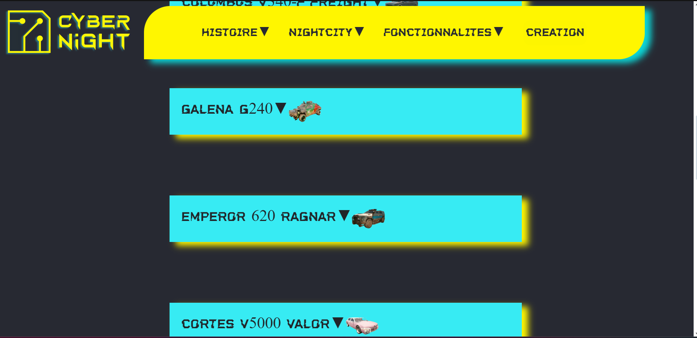
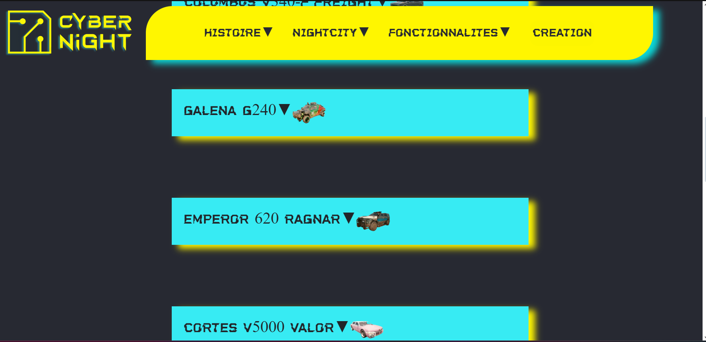

Site web wiki du jeu Cyberpunk 2077
Ce site a été réalisé pour l'un de nos projets du BUT MMI, j'ai dû réaliser cela seul.
La consigne était de réaliser un site web sans thème imposé: j'ai choisi que ce serait sur
le jeu Cyberpunk 2077.
J'ai dû utiliser une base de données en SQL et la traiter en PHP pour pouvoir l'afficher
sur le site, en créant aussi un formulaire permettant de créer un personnage s'affichant automatiquement.
J'ai du aussi réaliser des interactions en Javascript comme des encadrés qui s'ouvrent et se
ferment lorsqu'on clique dessus, pour en savoir plus sur un personnage en particulier ou autre.
J'ai du aussi réaliser des animations CSS comme un effet glitch sur le texte du header ou
bien pour faire des menus déroulants dans le header pour accéder aux autres pages.
Tout cela m'a permis d'augmenter mon niveau dans l'utilisation des langages informatiques,
et à réussir à me sortir de situations délicates.
Langages utilisés :


Logiciels utilisés :